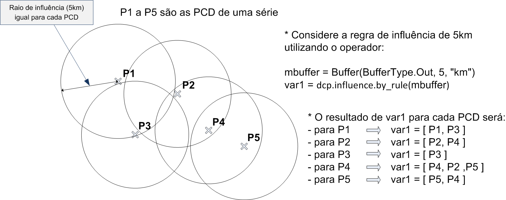

Operadores sobre PCD
Os operadores espaciais disponíveis para serem utilizados com os dados dinâmicos de PCD´s são utilizados sobre os atributos de cada PCD isoladamente ou em grupos seguindo a regra de influência. Cada PCD pode ainda ser utilizada como um objeto monitorado para ser cruzado com qualquer dos três tipos de dados dinâmicos (veja operadores sobre Objetos Monitorados).
Operadores sobre PCD
1- Regra de Influência
A regra de influência é utilizada para definir se serão consideradas outras PCD´s próximas da PCD que estiver sendo analisada. Operador cria uma lista em Python com a identificação das PCD em cada PCD. A Figura 3.36 mostra o resultado para 5 PCDs fazendo uso da regra de influência.
SINTAXE GERAL:
dcp.influence.by_rule(<buffer>)
onde:
- buffer : “Buffer” para ser aplicado a cada PCD, considerada como objeto monitorado. Ver utilitário “buffer” em item 3.3.3.1.

Figura 3.36 – Módulo de Administração: Análise – Regra de Influência sobre PCDs.
2- PCD
Grupo de operadores que consideram as últimas medidas de cada PCD´s.
SINTAXE GERAL:
dcp.<operator>(<buffer>, "<attribute>", [<list_dcp>], [<isActive>])
onde:
- operator: value, count, min, max, mean, median, sum, standard_deviation, ou variance;
- buffer : Buffer para ser aplicado ao ponto da PCD. Parâmetro obrigatório somente para operador “count”. Ver utilitário Buffer;
- attribute : String com o nome do atributo da PCD que deve ser utilizado para recuperar valores numéricos. O atributo deve ser do tipo numérico (Ex. Integer, Float, Double, Long). Não usar para operador “count”;
- list_dcp : [Opcional] Lista contendo a identificação das PCD´s. Ver utilitário “Regra de Influência”. Não usar se operador zonal for “count”. Se não utilizado nos demais operadores, todas as PCD´s ativas da série serão consideradas.
- isActive : [Opcional] utiliza-se uma expressão do tipo booleana, True ou False, que considera como parâmetro o botão Ativo, disponível em Registro de Dado Dinâmico de cada PCD. [True] botão Ativo marcado são considerados os valores da pcd na análise. [False] não considera os valores da pcd na análise.
Segue a descrição de cada operador.
PCD: Valor
Retorna o valor da última leitura de cada PCD.
Sintaxe:
dcp.value("<attribute>")
Exemplo: x = dcp.value(“pluvio”)
PCD: Contagem
Retorna o número de PCD´s que influenciam cada PCD (como objeto monitorado).
Sintaxe:
dcp.count(<buffer>, [isActive])
Exemplo: buf1 = Buffer()
x = dcp.count(buf1, True)
PCD: Mínimo
Retorna o menor valor de um atributo de todas as PCD´s disponíveis na lista.
Sintaxe:
dcp.min("<attribute>", [<list_dcp>])
Exemplo: b1 = Buffer(BufferType.Out_union, 2, "km")
ids = dcp.influence.by_rule("Serra do Mar", b1)
x = dcp.min("Pluvio", ids)
PCD: Máximo
Retorna o maior valor de um atributo de todas as PCD´s disponíveis na lista.
Sintaxe:
dcp.max("<attribute>", [<list_dcp>])
Exemplo: b1 = Buffer(BufferType.Out, 400, "m")
ids = dcp.influence.by_rule("Serra do Mar", b1)
x = dcp.max("Pluvio", ids)
PCD: Média
Retorna a média dos valores de um atributo de todas as PCD´s disponíveis na lista.
Sintaxe:
dcp.mean("<attribute>", [<list_dcp>])
Exemplo: b1 = Buffer(BufferType.Level, 10, "km", 5, "km")
ids = dcp.influence.by_rule("Serra do Mar", b1)
x = dcp.mean("Chuva", ids)
PCD: Mediana
Retorna a mediana dos valores de um atributo de todas as PCD´s disponíveis na lista.
Sintaxe:
dcp.median("<attribute>", [<list_dcp>])
Exemplo: b1 = Buffer(BufferType.Out, 800, "m")
ids = dcp.influence.by_rule("Serra do Mar", b1)
x = dcp.median("temperatura", ids)
PCD: Soma
Retorna a soma dos valores de um atributo de todas as PCD´s disponíveis na lista.
Sintaxe:
dcp.sum("<attribute>", [<list_dcp>])
Exemplo: ids = dcp.influence.by_attribute("Serra do Mar", [att1, att2, att2, att4])
x = dcp.sum("temperatura", ids)
PCD: Desvio Padrão
Retorna o desvio padrão dos valores de um atributo de todas as PCD´s disponíveis na lista.
Sintaxe:
dcp.standard_deviation("<attribute>", [<list_dcp>])
Exemplo: b1 = Buffer(BufferType.Out, 800, "m")
ids = dcp.influence.by_rule("Serra do Mar", b1)
x = dcp.standard_deviation("temperatura", ids)
PCD: Variância
Retorna a variância dos valores de um atributo de todas as PCD´s disponíveis na lista.
Sintaxe:
dcp.variance("<attribute>", [<list_dcp>])
Exemplo: b1 = Buffer(BufferType.In, 800, "m")
ids = dcp.influence.by_rule("Serra do Mar", b1)
x = dcp.variance("temperatura", ids)
3- PCD histórico
Grupo de operadores que consideram as PCD´s individualmente e utilizam as últimas medidas obtidas por cada uma, no intervalo de tempo definido entre a data/hora atual e o valor de tempo informado no passado.
SINTAXE GERAL:
dcp.history.<operator>("<attribute>", "<time>", [<list_dcp>])
onde:
- operator: min, max, mean, sum, median, standard_deviation ou variance;
- attribute: String com o nome do atributo da PCD que deve ser utilizado para recuperar valores estatísticos. O atributo deve ser do tipo numérico (Ex. Integer, Float, Double, Long);
- time: String com o intervalo de tempo para filtrar os valores de cada PCD no intervalo de tempo desejado. Ver utilitário Unidades de tempo;
- list_dcp: [Opcional] Lista contendo a identificação das PCD´s que influenciam a PCD em análise no momento, como se fosse um objeto monitorado. Ver utilitário “Regra de Influência”. Se não utilizado somente a PCD corrente será considerada.
Segue a descrição de cada operador.
PCD histórico: Mínimo
Retorna o menor valor de um atributo de cada PCD individualmente no intervalo de tempo definido entre a data/hora atual e o valor de tempo informado no passado.
Sintaxe:
dcp.history.min("<attribute>", "<time>", [<list_dcp>])
Exemplo: b1 = Buffer(BufferType.Out_union, 2, "km")
ids = dcp.influence.by_rule("Serra do Mar", b1)
x = dcp.history.min("Pluvio“, “1d”, ids)
PCD histórico: Máximo
Retorna o maior valor de um atributo de cada PCD individualmente no intervalo de tempo definido entre a data/hora atual e o valor de tempo informado no passado.
Sintaxe:
dcp.history.max("<attribute>", "<time>", [<list_dcp>])
Exemplo: b1 = Buffer(BufferType.Out, 400, "m")
ids = dcp.influence.by_rule("Serra do Mar", b1)
x = dcp.history.max("Pluvio", "30h", ids)
PCD histórico: Média
Retorna a média dos valores de um atributo de cada PCD individualmente no intervalo de tempo definido entre a data/hora atual e o valor de tempo informado no passado.
Sintaxe:
dcp.history.mean("<attribute>", "<time>", [<list_dcp>])
Exemplo: b1 = Buffer(BufferType.Level, 10, "km", 5, "km")
ids = dcp.influence.by_rule("Serra do Mar", b1)
x = dcp.history.mean("Chuva", "3d", ids)
PCD histórico: Mediana
Retorna a mediana dos valores de um atributo de cada PCD individualmente no intervalo de tempo definido entre a data/hora atual e o valor de tempo informado no passado.
Sintaxe:
dcp.history.median("<attribute>", "<time>", [<list_dcp>])
Exemplo: b1 = Buffer(BufferType.Out, 800, "m")
ids = dcp.influence.by_rule("Serra do Mar", b1)
x = dcp.history.median("temperatura", "360min", ids)
PCD histórico: Soma
Retorna a soma dos valores de um atributo de cada PCD individualmente no intervalo de tempo definido entre a data/hora atual e o valor de tempo informado no passado.
Sintaxe:
dcp.history.sum("<attribute>", "<time>", [<list_dcp>])
Exemplo: ids = dcp.influence.by_attribute("Serra do Mar", [att1, att2, att2, att4])
x = dcp.history.sum("temperatura", "5h", ids)
PCD histórico: Desvio Padrão
Retorna o desvio padrão dos valores de um atributo de cada PCD individualmente no intervalo de tempo definido entre a data/hora atual e o valor de tempo informado no passado.
Sintaxe:
dcp.history.standard_deviation("<attribute>", "<time>", [<list_dcp>])
Exemplo: b1 = Buffer(BufferType.Out, 800, "m")
ids = dcp.influence.by_rule("Serra do Mar", b1)
x = dcp.history.standard_deviation("temperatura", "1w", ids)
PCD histórico: Variância
Retorna a variância dos valores de um atributo de cada PCD individualmente no intervalo de tempo definido entre a data/hora atual e o valor de tempo informado no passado.
Sintaxe:
dcp.history.variance("<attribute>", "<time>", [<list_dcp>])
Exemplo: b1 = Buffer(BufferType.In, 800, "m")
ids = dcp.influence.by_rule("Serra do Mar", b1)
x = dcp.history.variance("temperatura", "24h", ids)
4- PCD histórico por intervalo
Grupo de operadores que consideram as PCD´s individualmente e utilizam as últimas medidas obtidas por cada uma, no intervalo de tempo definido entre dois valores de tempo informado no passado.
SINTAXE GERAL:
dcp.history.interval.<operator>("<attribute>", "<time_begin>", "<time_end>", [<list_dcp>])
onde:
- operator : min, max, mean, sum, median, standard_deviation ou variance;
- attribute: String com o nome do atributo da PCD que deve ser utilizado para recuperar valores estatísticos. O atributo deve ser do tipo numérico (Ex. Integer, Float, Double, Long). Não usar para operador “count”;
- time_begin: String inicial (mais antigo) do intervalo de tempo para filtrar as ocorrências;
- time_end: String final (mais recente) do intervalo de tempo para filtrar as ocorrências;
- list_dcp: [Opcional] Lista contendo a identificação das PCD´s que influenciam a PCD em análise no momento, como se fosse um objeto monitorado. Ver utilitário “Regra de Influência”. Se não utilizado nos demais operadores, somente a PCD corrente será considerada.
Segue a descrição de cada operador.
PCD histórico por intervalo: Mínimo
Retorna o menor valor de um atributo de cada PCD individualmente no intervalo de tempo inicial e final informado no passado em função da data/hora atual.
Sintaxe:
dcp.history.interval.min(“<attribute>”, “<time_begin>”, “<time_end>”, [<list_dcp>])
Exemplo: b1 = Buffer(BufferType.Out_union, 2, "km")
ids = dcp.influence.by_rule("Serra do Mar", b1)
x = dcp.history.interval.min("Pluvio", "2d", '1d', ids)
PCD histórico por intervalo: Máximo
Retorna o maior valor de um atributo de cada PCD individualmente no intervalo de tempo inicial e final informado no passado em função da data/hora atual.
Sintaxe:
dcp.history.interval.max(“<attribute>”, “<time_begin>”, “<time_end>”, [<list_dcp>])
Exemplo: b1 = Buffer(BufferType.Out, 400, "m")
ids = dcp.influence.by_rule("Serra do Mar", b1)
x = dcp.history.interval.max("Pluvio", "24h", "12h", ids)
PCD histórico por intervalo: Média
Retorna a média dos valores de um atributo de cada PCD individualmente no intervalo de tempo inicial e final informado no passado em função da data/hora atual.
Sintaxe:
dcp.history.interval.mean("<attribute>", "<time_begin>", "<time_end>", [<list_dcp>])
Exemplo: b1 = Buffer(BufferType.Level, 10, "km", 5, "km")
ids = dcp.influence.by_rule("Serra do Mar", b1)
x = dcp.history.interval.mean("Chuva", "24d", "12d", ids)
PCD histórico por intervalo: Mediana
Retorna a mediana dos valores de um atributo de cada PCD individualmente no intervalo de tempo inicial e final informado no passado em função da data/hora atual.
Sintaxe:
dcp.history.interval.median("<attribute>", "<time_begin>", "<time_end>", [<list_dcp>])
Exemplo: b1 = Buffer(BufferType.Out, 800, "m")
ids = dcp.influence.by_rule("Serra do Mar", b1)
x = dcp.history.interval.median("temperatura", "2d", "1d", ids)
PCD histórico por intervalo: Soma
Retorna a soma dos valores de um atributo de cada PCD individualmente no intervalo de tempo inicial e final informado no passado em função da data/hora atual.
Sintaxe:
dcp.history.interval.sum("<attribute>", "<time_begin>", "<time_end>", [<list_dcp>])
Exemplo: ids = dcp.influence.by_attribute("Serra do Mar", [att1, att2, att2, att4])
x = dcp.history.interval.sum("temperatura", "2d", "1d", ids)
PCD histórico por intervalo: Desvio Padrão
Retorna o desvio padrão dos valores de um atributo de cada PCD individualmente no intervalo de tempo inicial e final informado no passado em função da data/hora atual.
Sintaxe:
dcp.history.interval.standard_deviation("<attribute>", "<time_begin>", "<time_end>", [<list_dcp>])
Exemplo: b1 = Buffer(BufferType.Out, 800, "m")
ids = dcp.influence.by_rule("Serra do Mar", b1)
x = dcp.history.interval.standard_deviation("temperatura", "2d", "1d", ids)
PCD histórico por intervalo: Variância
Retorna a variância dos valores de um atributo de cada PCD individualmente no intervalo de tempo inicial e final informado no passado em função da data/hora atual.
Sintaxe:
dcp.history.interval.variance("<attribute>", "<time_begin>", "<time_end>", [<list_dcp>])
Exemplo: b1 = Buffer(BufferType.In, 800, "m")
ids = dcp.influence.by_rule("Serra do Mar", b1)
x = dcp.history.interval.variance("temperatura", "2d", "1d", ids)